Mini-pat ontwerp 'n huis om minder energie te gebruik
Wanneer elektrisiteit opgewek word het dit 'n negatiewe uitwerking op die omgewing. Om hout, gas
of paraffien te verbrand het ook 'n nadelige invloed. Gedurende die volgende drie weke gaan jy aan
maniere dink om hierdie nadelige uitwerking te verminder deur 'n huis op 'n slim manier te ontwerp.
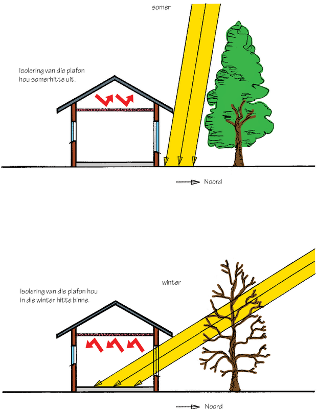Figuur 1: 'n Huis wat slim ontwerp is, laat op 'n wintersdag die son se hitte binne, maar hou dit op 'n
warm somersdag buite.
Week 1
Die verskuilde koste van elektrisiteit
Oor die laaste paar jaar het die elektrisiteitsprys baie gestyg. Sommige mense is
ongelukkig hieroor, want hulle het nie genoeg geld om vir elektrisiteit te betaal nie.
Daar is 'n ander koste verbonde aan elektrisiteit wat niks met geld te doen het nie. Dit is die "koste"
vir elektrisiteit wat deur die omgewing gedra moet
word. Net soos die hoeveelheid geld wat mense het,
verander wanneer hulle vir elektrisiteit moet betaal,
so verander die omgewing wanneer elektrisiteit opgewek word.
Om elektrisiteit te maak word
gewoonlik die opwekking van
elektrisiteit genoem.
Gedurende hierdie week gaan jy leer hoe die omgewing deur die opwekking van
elektrisiteit verander word. Hierdie verandering is dikwels sleg vir die omgewing.
Mens kan sê elektrisiteitsopwekking het 'n nadelige uitwerking op
die omgewing.
Jy gaan dink aan maniere waarop hierdie nadelige uitwerking verminder kan word.
Waar kom elektrisiteit vandaan? (30 minute)
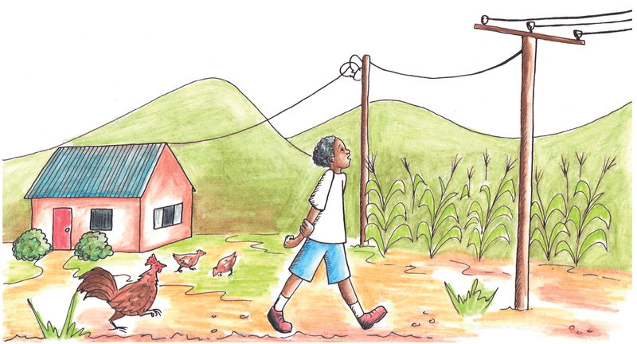Figuur 2
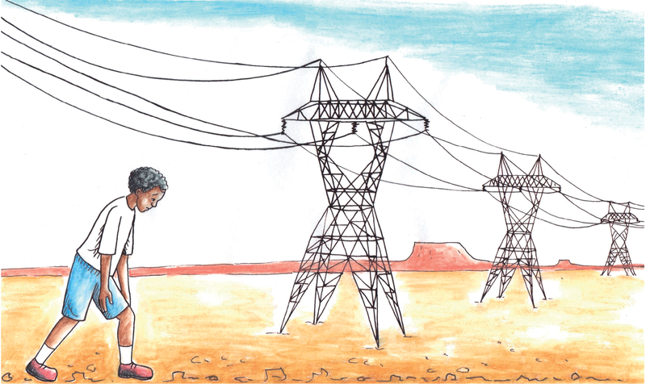Figuur 3
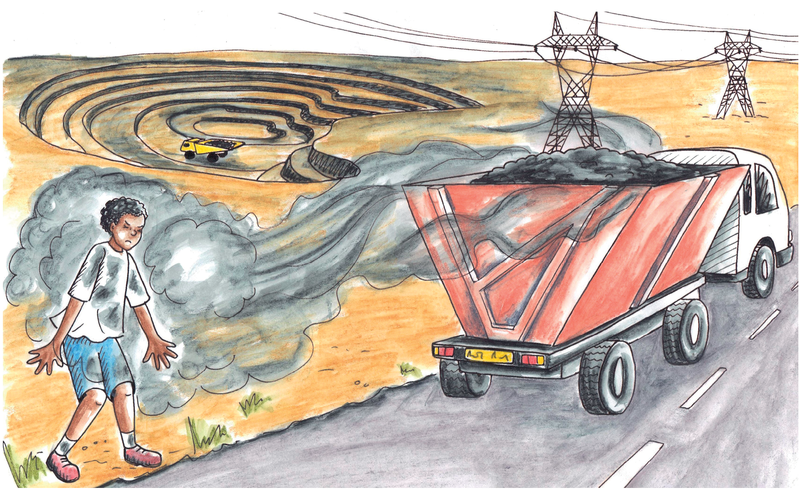Figuur 4
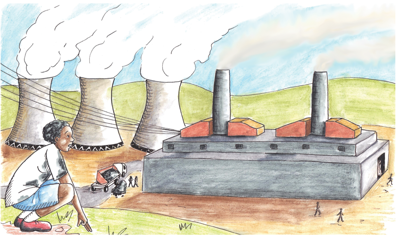Figuur 5
Die seun het die kraglyn gevolg om te sien waar die elektrisiteit vandaan kom.
Toe hy by die kragopwekkingsaanleg ingaan, het 'n tegnikus hom vertel hoe die
steenkoolverbrandende installasie werk. Dit is wat hy vir hom vertel het:
"In 'n kragstasie word steenkool onder 'n tenk water,
wat 'n stoomketel genoem word, verbrand. Die hitte
van die vuur laat die water kook en in stoom met 'n
hoë druk verdamp. Die hoëdrukstoom blaas deur 'n
turbine en laat dit draai. Dit is baie soos die wind
wat 'n windpomp se wiel laat draai. 'n Toestel wat
'n generator of dinamo genoem word verander die
rotasiebeweging van die turbine na elektrisiteit.
Die gasse en rook van die vuur gaan deur 'n filter
voordat dit deur die skoorsteen in die atmosfeer
vrygestel word. Die filter verwyder meeste van die
as en roetpartikels sodat daar net 'n klein bietjie
stoom by die bokant van die skoorsteen vrygestel word."
As 'n ballon bars, of as 'n fiets-
of motorband pap is, vloei die
lug baie vinnig en met groot
krag uit. Dit is omdat die lug
binne 'n ballon of band onder
hoë druk is.
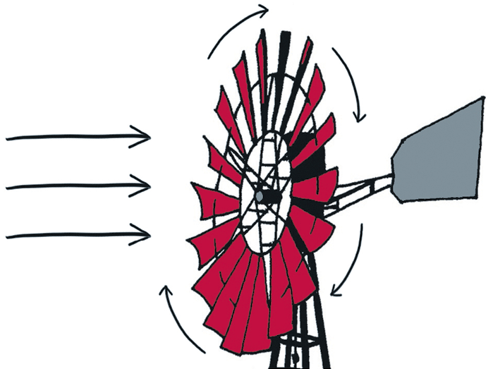Figuur 6 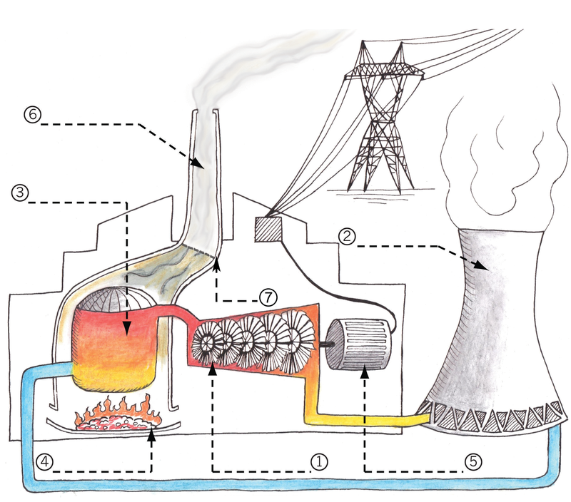Figuur 7
'n Steenkoolverbrandende kragopwekkingsaanleg het die volgende dele:
'n Generator.
'n Koeltoring. Hierdie toring gebruik koue lug om die stoom uit die turbine af te
koel. Dit laat die stoom kondenseer na water, wat weer gebruik word. Slegs 'n
klein hoeveelheid stoom word vanaf die bo-punt van die toring vrygestel.
'n Verbrandingsoond vir die steenkool.
'n Filter om as en roet partikels te verwyder, sodat hulle nie in die atmosfeer
vrygestel word nie.
'n Skoorsteen wat koolsuurgas in die atmosfeer vrystel.
'n
Turbine.
'n Stoomketel waarin water na hoëdrukstoom verander word.
Ondersoek: die onderskeie dele van 'n kragstasie
Watter deel van 'n kragstasie word gewys deur watter nommer op die prent in
figuur 7? Gebruik jou potlood om die name van die dele op die strepieslyne langs
die nommer op die prent te skryf. [3½]
Watter invloed het elektrisiteitsopwekking op die omgewing? (30 minute)
Kyk na die prent hieronder.
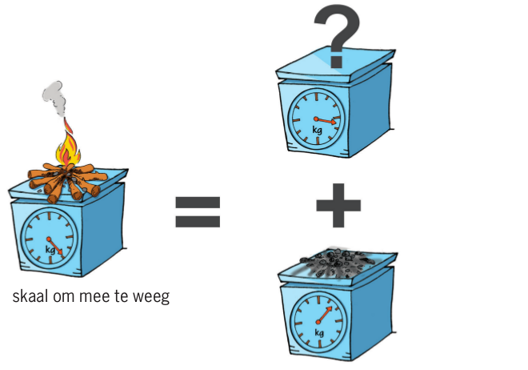Figuur 8: Kan massa in die niet verdwyn?
Die as wat aan die einde oorbly, weeg baie minder as die hout waarmee die vuur
aan die begin gemaak is. Wat het van die res van die massa geword?
Daar is baie verskillende materiale en stowwe wat verbrand word om hitte en lig
te verskaf. Hout, steenkool, paraffien, gas en olie is van die stowwe waarvan jy
reeds weet. Dit word brandstof genoem. Al hierdie tipes brandstof bevat koolstof.
Koolstof is een van die belangrikste boustene
waaruit diere en mense gemaak word. Hierdie
boustene is baie klein. Dit is onmoontlik om hulle te sien. Koolstof is 'n vaste stof.
Koolstof stoor energie, soos 'n battery. As koolstof
op sy eie is, kan 'n mens sê die battery is gelaai. As die
koolstof verbind is met 'n ander klein bousteen wat
suurstof genoem word, is die battery pap. Suurstof is
'n gas. Wanneer koolstof met suurstof verbind, word
hulle saam koolstofdioksied, of koolsuurgas, genoem.
Koolstof is 'n gas
As twee baie klein boustene
van 'n materiaal naby mekaar is, kleef hulle aan mekaar vas
asof hulle met baie sterk gom geplak is. Dit word chemiese binding genoem. Julle sal
ater, as julle chemie doen in natuurwetenskap, meer hiervan leer.
Gaan buitentoe op 'n baie koue, maar sonnige, wintersdag. Laat die son op jou
hand skyn. Hoekom begin jou hand warm voel, selfs al is die lug om jou baie koud?
Dit is omdat die sonlig binne jou vel in hitte verander word. Lig en hitte is twee
verskillende vorms van energie. Beweging en elektrisiteit is twee ander vorms van
energie.
Wanneer koolstof met suurstof verbind, word energie in die vorm van hitte
vrygestel:
koolstof + suurstof = koolstofdioksied (koolsuurgas) + energie.
Wanneer 'n dier kos eet wat koolstof bevat en lug inasem wat suurstof bevat
gebeur die volgende: Die suurstof en die koolstof kombineer binne die dier om
die dier energie te gee en dit te laat groei. Dieselfde proses vind plaas wanneer
plantmateriaal wat koolstof bevat in lug verbrand word.
Energie is nodig om koolstof en suurstof wat in verbinding is, van mekaar te
skei. Plante skei koolstof en suurstof van mekaar deur sonlig te gebruik as energie:
koolstofdioksied + lig = koolstof + suurstof.
Plante gebruik koolstof om te groei, want koolstof is die belangrikste bousteen
van plante. Hulle laat weer suurstof in die atmosfeer vry.
Die verandering van koolstof na koolstofdioksied (koolsuurgas) en terug na
koolstof word die koolstofkringloop genoem.
Wanneer jy 'n vuur maak, of gas of paraffien in jou huis verbrand, word
koolstofdioksied in die lug vrygestel. Wanneer jy 'n elektriese stoof gebruik, word
geen koolstofdioksied van jou huis af vrygestel nie, maar koolstofdioksied word
vrygestel deur die kragopwekkingsaanleg van die elektrisiteit wat jy gebruik.
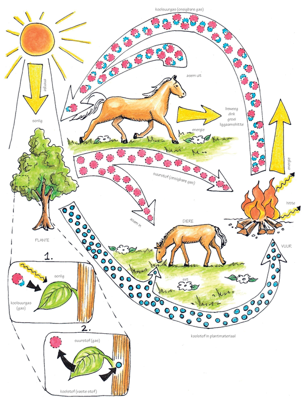Figuur 9: Die koolstofkringloop
Ondersoek: koolstofdioksied
Wat verander koolstofdioksied, wat 'n gas â koolsuurgas â is, terug na
koolstof in 'n vaste vorm?(1)
Waarvan word hierdie soliede koolstof deel? (1)
Kan jy die koolstofdioksied sien opstyg uit die vuur? (½)
Mense gebruik brandstof vir hitte en lig. Vir wat anders gebruik ons ook brandstof? (1)
Regs is 'n prentjie van 'n kweekhuis. Kweekhuise
hou plante in die winter warm deur sonenergie te
gebruik. Dit laat die songenergie na binne, maar
laat nie toe dat dieselfde hoeveelheid energie
weer ontsnap nie. Daarom is dit warmer binne 'n
kweekhuis as buite. Kweekhuise kan van glas of
plastiek gebou word.
Figuur 10
Die luglaag om die aarde word die atmosfeer.
genoem. Dit is 'n bietjie soos die glas- of
plastiekbedekking van 'n kweekhuis. Dit laat die
sonligenergie na binne, maar dit laat nie dieselfde
hoeveelheid energie toe om weer te ontsnap nie.
Dit word die kweekhuiseffek genoem. As dit nie
gebeur het nie, sou dit elke nag yskoud gewees het.
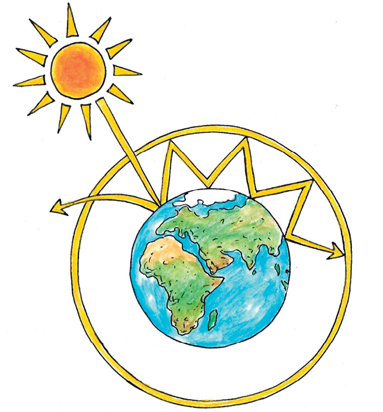Figuur 11
Wanneer iets verbrand, word koolsuurgas in
die atmosfeer vrygestel. Koolsuurgas is 'n gas wat
baie goed is om die sonlig binne die luglaag om die
aarde vas te vang, maar net 'n klein gedeelte van
die atmosfeer bestaan uit koolsuurgas. Hoe meer
koolstofdioksied (koolsuurgas) in die atmosfeer
is, hoe meer sonenergie word vasgevang â wat
beteken dat dit warmer op die aarde word. Baie
mense is bekommerd dat die klimaat besig is om te
verander, wat tot droogte en storms kan lei.
Wat sal gebeur as die hoeveelheid koolsuurgas in die atmosfeer al hoe meer
word?
(1)
Totaal [4½]
Hoe kan die nadelige gevolge van elektrisiteitsopwekking verminder word? (60 minute)
Later vanjaar sal julle van verskillende soorte kragstasies leer. Sommige van hulle
laat minder, of geen, koolsuurgas in die atmosfeer vry. Daar word gehoop dat
daar in die toekoms minder elektrisiteit deur steenkoolverbrandende kragstasies
opgewek sal word.
Die meeste elektrisiteit word egter deur steenkoolverbrandende kragstasies
opgewek, en dit sal nie gou verander nie.
Julle gaan nou bespreek wat elektrisiteitsgebruikers kan doen om die hoeveelheid
koolsuurgas wat in die atmosfeer vrygelaat word te verminder. Elke keer as jy 'n ketel
of ander elektriese toestel aanskakel, gebruik jy elektrisiteit. Hoe meer elektrisiteit ons
gebruik, hoe meer elektrisiteit moet kragstasies opwek.
Daar is ook 'n minder sigbare manier waarop elektrisiteit gebruik word. Elke keer
wanneer jy iets koop wat in 'n fabriek gemaak is, het die fabriek elektrisiteit
gebruik om daardie ding te vervaardig. As daar minder van daardie items gemaak
word, sal die fabrieke kleiner wees en minder elektrisiteit gebruik.
Ondersoek: wat kan jy doen om minder koolsuurgas vry te stel?
In hierdie les gaan julle onderwyser die klas laat gesels oor hoe gewone mense
minder elektrisiteit kan gebruik of minder hout, gas of paraffien verbrand. Die
volgende vrae sal vir julle idees vir die bespreking gee:
Hoeveel water kook jy in die ketel wanneer jy tee of koffie maak? Kook jy meer
water as wat jy nodig het? Het die hoeveelheid water wat jy kook 'n uitwerking
op die hoeveelheid elektrisiteit wat jy gebruik?
(1)
Skakel jy die ligte af wanneer jy 'n kamer verlaat? Sal dit die hoeveelheid
elektrisiteit wat jy gebruik, verminder?
(1)
Baie huise het 'n elektriese warmwatersilinder om die water te verwarm. 'n
Warmwatersilinder is 'n watertenk wat warm water aan krane verskaf. Die
water in warmwatersilinders word deur 'n elektriese element verhit, net soos
wat die water in 'n ketel deur 'n elektriese element verhit word.
Sarah stort elke dag vyf minute lank onder warm water. Nyiko stort elke
dag 20 minute lank onder warm water. Het die tyd wat jy neem om te stort 'n
uitwerking op die elektrisiteit wat jy gebruik? (1)
Kyk na die volgende oopgesnyde
prent van 'n warmwatersilinder.
Kan iets verander word daaraan,
of daarby gevoeg word, sodat dit
minder elektrisiteit sal gebruik? (1)
Gedurende die winter gebruik Thabo
se gesin 'n elektriese verwarmer om
hul huis te verhit. Hier regs is 'n foto
van hulle dak aan die binnekant van
hul huis. Iemand het hulle vertel dat 'n
klomp hitte deur 'n dak kan ontsnap.
Dit beteken dat 'n klomp hitte van
die verwarmer gemors word, want dit
ontsnap deur die dak. Kan hulle iets aan
hul huis verander sodat daar minder
hitte deur die dak ontsnap?
(1)
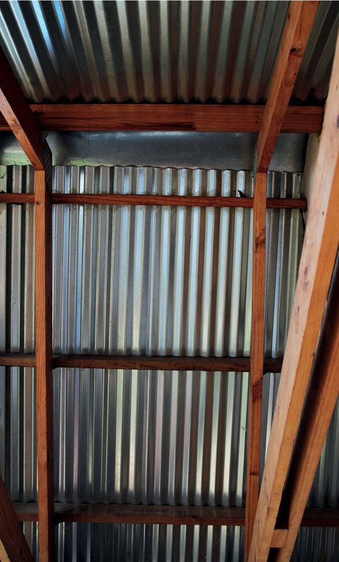Figuur 14
Nabeelah se gesin woon in 'n huis sonder elektrisiteit. Hulle gebruik gas,
hout en kerse vir verhitting en beligting. Katlego se gesin woon in 'n huis met
elektrisiteit. Hulle gebruik slegs elektriese ligte en toestelle. Die twee gesinne
is ewe groot. Hulle gebruik dieselfde hoeveelheid lig, warm water en hitte
om kos te kook. Watter een van die twee gesinne veroorsaak dat die meeste
koolsuurgas in die atmosfeer vrygelaat word?
(1)
Totaal [6]
Iets wat jy tuis kan doen
Hieronder is een idee om
minder elektrisiteit of brandstof
te gebruik as jy kook:
Bring die kos tot kookpunt in
'n pot op die stoof. Verwyder
dan die pot en draai dit in 'n dik
baadjie toe om dit baie warm te
hou. Laat dit daar vir twee tot
drie uur. Die idee is dieselfde
as om op 'n koue dag warm
aan te trek. Om 'n baadjie om
'n pot te draai om dit warm te
hou word die isolering van die
pot genoem.
Die foto hieronder wys
'n geïsoleerde kookboks
wat gebruik is om rys te
kook. Hierdie boks is uit
afvalmateriaal vervaardig.
Voordat die boks in 'n
handdoek toegedraai is, het
dit effens warm binne gevoel
nadat die pot daarin geplaas is.
Dit beteken hitte was besig om
uit die pot te ontsnap. 'n Ekstra
laag isolering is bygevoeg deur
'n handdoek versigtig om die
boks te draai, sodat dit elke
deel van die boks bedek het.
As enige deel van die boks nie
behoorlik bedek was nie, kon
hitte daaruit ontsnap het. Dit
het twee uur geneem om die
rys te kook.
Veiligheids-waarskuwings
Boiling hot water can burn
you!
Kookwater kan jou brand!
Wanneer die kos in die boks
net louwarm is, en nie baie
warm nie, en dit bly vir meer
as een uur in die boks, kan
bakterieë daarin groei. Dit kan
voedselvergiftiging veroorsaak.
Om dit te voorkom, maak
seker dat die boks goed
geïsoleer is en moenie die kos
vir langer as drie ure in die
boks hou nie.
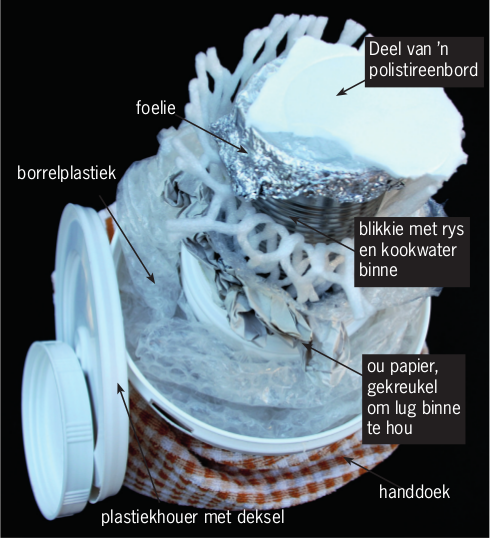Figuur 15: Geïsoleerde kookboks uit afvalmateriaal vervaardig
Week 2
Bespaar energie deur minder boumateriaal te gebruik
Fabrieke gebruik elektrisiteit of verbrand steenkool
om boumateriaal soos sement en staal te maak.
Daarom kan mens sê daar is 'n energiekoste en 'n
koolstofdioksiedkoste aan boumateriaal verbonde.
Het jy geweet?
Omtrent 9 kg koolstof-dioksied word in die atmosfeer
vrygestel wanneer 10 kg sement of 10 kg staal
vervaardig word.
Hoe kan die hoeveelheid koolsuurgas wat in die
atmosfeer vrygelaat word, verminder word? Een
manier is om dinge beter te ontwerp sodat minder materiaal benodig word om
hulle te bou. Dan sal fabrieke minder materiaal hoef te maak. 'n Ander manier is
om minder bome af te saag, want bome help om die hoeveelheid koolsuurgas in
die atmosfeer te verminder.
Hierdie week gaan julle van drie materiale leer wat in spesiale vorms gemaak
is, of op spesiale maniere saamgevoeg word, sodat 'n sterk voorwerp met 'n klein
hoeveelheid materiaal gemaak word. Julle gaan leer oor versterkte beton, laaghout,
en I-balke van staal. Maar eers gaan julle hersiening doen oor die verskillende
tipes kragte wat op materiale kan inwerk.
Kragte wat inwerk op materiale (30 minute)
Hersieningsvrae
Blaai terug na wat julle in hoofstuk 1 geleer het om die volgende vrae te
beantwoord. As jy 'n vraag moeilik vind, kan dit jou help om eers 'n rowwe skets
van die situasie te maak. Mens se brein werk dikwels beter as jy die ding waaroor
jy moet dink, kan sien.
Watter kragte kan op 'n boomstam inwerk?
Watter tipe krag werk op 'n
kolompilaar onder 'n brug in?
Watter tipe krag werk in op die ketting
van 'n fiets?
Neem jou werkboek en buig dit soos in die foto hieronder. Maak seker dat die
sye aan die linkerkant en aan die regterkant, aan die voorkante en agterkante,
steeds regte hoeke met die voorste sy en die agterste sy maak.
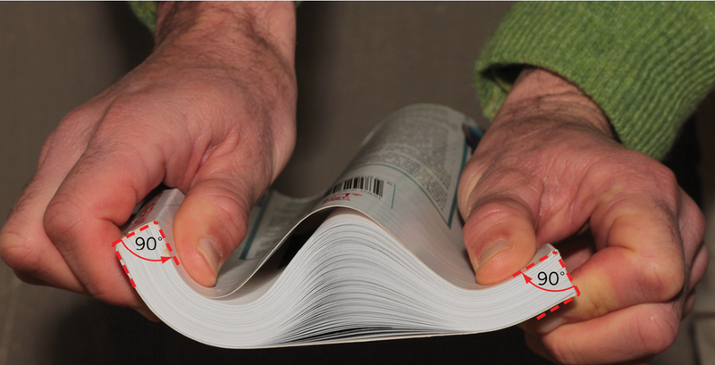Figuur 16
Hoekom maak die boek iets soos 'n
borrel bo-op wanneer jy dit buig?
Hoe voel dit aan die onderkant van die boek?
Is die onderste bladsye slap of styf?
Boute en moere word gebruik om
verskillende materiale bymekaar
te hou, soos in die prent hier regs
gewys word
Watter verskillende soorte kragte
kan op 'n bout inwerk? Verduidelik
jou antwoord of antwoorde.
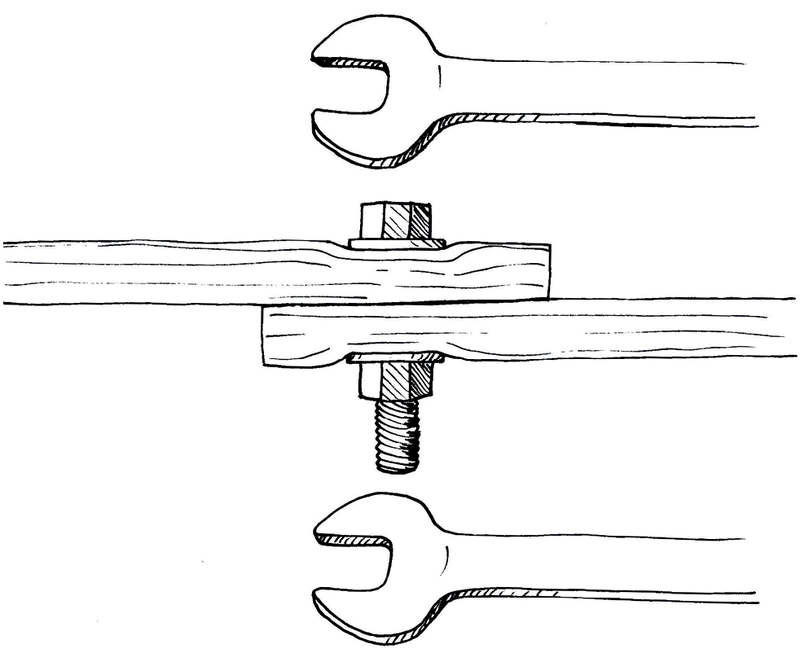Figuur 17
Bewapende beton en laaghout (30 minute)
Bewapende beton
Beton word in die meeste moderne strukture en geboue gebruik. Dit kan baie
groot drukkragte weerstaan sonder om te breek. Dit kan egter nie groot trekkragte
weerstaan nie. In die meeste situasies ondervind strukturele dele van beton beide
druk- en trekkragte. Om die beton ook groot trekkragte te laat weerstaan word
staalstawe of -net in die beton geplaas as die nat beton in 'n vorm gegiet word.
Staal kan baie groot trekkragte weerstaan. Beton waarin staal geplaas is, word
versterkte beton genoem
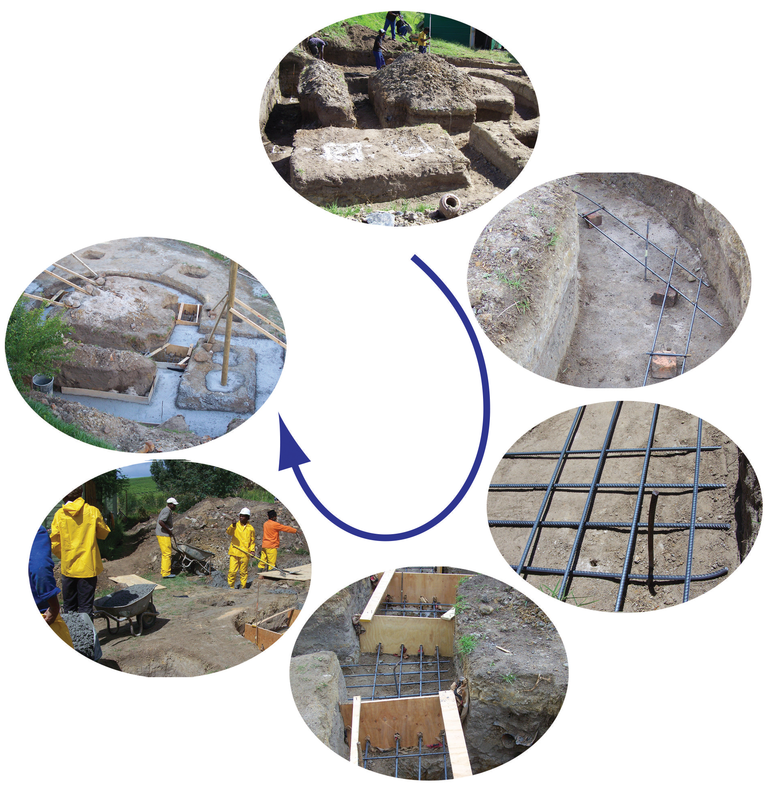Figuur 18: staalstawe word gebruik om die betonfondamente van 'n nuwe huis te versterk.
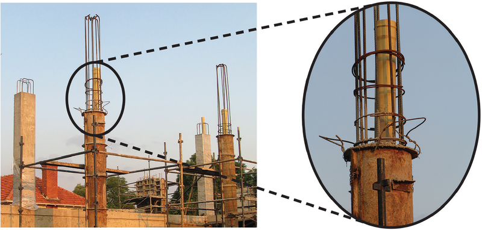Figuur 19: staalstawe word aan die binnekant van 'n betonpilaar van 'n groot gebou geplaas.
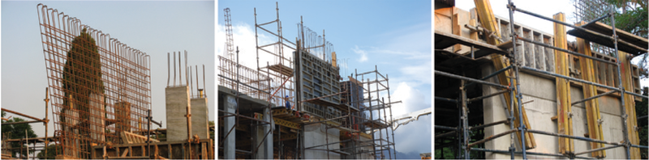Figuur 20: staalstawe word binne 'n betonmuur van 'n groot gebou geplaas.
Laaghout
Hout bestaan uit vesels wat al langs die lengte in 'n
boomstam of tak gerangskik is. Hierdie rangskikking
word die grein van die hout genoem en kan as dun,
parallelle lyne waargeneem word.
'n Stuk hout bars dikwels in die rigting van sy grein.
Dit gebeur as 'n trekkrag dwars oor die rigting van die
grein toegepas word.
'n Ander manier om te sê
"dwars" met die rigting van die
grein van die hout, is om te sê
dis reglynig of haaks met die
grein van die hout.
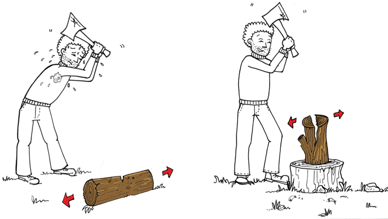Figuur 21: Wat is die maklikste, om hout dwarsoor die rigting van die grein te kloof, of om dit in
die rigting van die grein te kloof?
Laaghout word gemaak deur verskeie
dun lae hout bo-op mekaar vas te
plak. Die grein van elke laag vorm 'n
regte hoek met die grein van die laag
daaronder, of daarbo. Dus kan laaghout
in beide rigtings groot trekkragte
weerstaan.
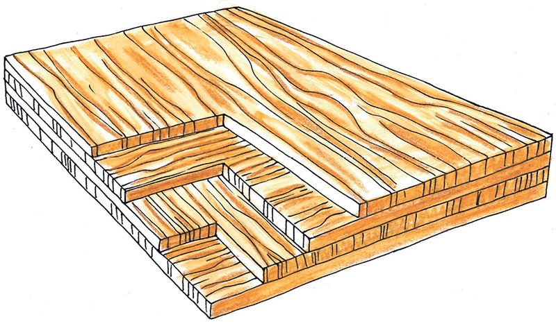Figuur 22: Die verskillende lae van laaghout
Laaghout word meestal gebruik vir
skulpstrukture wat groot oppervlaktes,
soos vloere bedek. Ander voorbeelde
van die gebruik van laaghout is vir
sitplekke en rugleunings van stoele, vir
tafelblaaie, en vir skaatsplanke.
'n Skulpstruktuur van laaghout word dikwels deur 'n raamstruktuur daaronder
ondersteun.
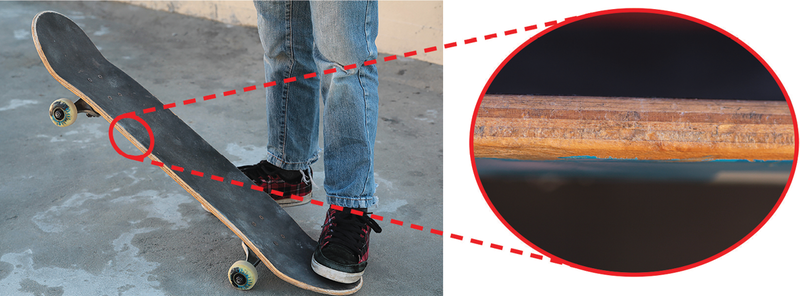Figuur 23: 'n Skaatsplank word van laaghout gemaak.
Ondersoek: eienskappe van verskillende materiale
As dieselfde trekkrag in die lengte en breedte van 'n materiaal uitgeoefen word,
sal dit ewe veel in beide rigtings strek?
Die materiaal waarvan 'n trui gemaak word:
Die materiaal waarvan 'n skoolhemp gemaak word:
Kyk na die prente hieronder. 'n Droë stuk hout kraak maklik as jy dit buig, maar
die rubbersool van 'n skoen kraak nie, selfs al buig jy dit baie ver.
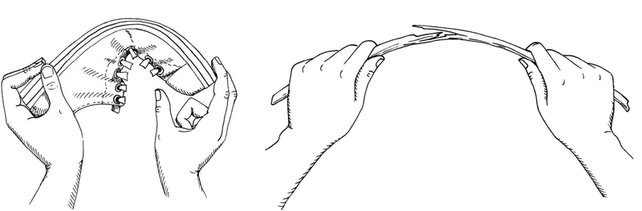Figuur 24
Rubber kan van vorm verander as jy dit uitmekaar trek of saampers. Wanneer
jy ophou om 'n stuk rubber te druk of te trek, keer dit na sy oorspronklike vorm
terug. Mens sê rubber is 'n elastiese materiaal. Rekkies word ook van rubber
gemaak. As daar trekkrag toegepas word op 'n elastiese rek word dit langer. Dit
word ook dunner
Droë hout is net effens elasties en kan nie veel langer word as jy 'n trekkrag
daarop toepas nie. As die trekkrag dus te groot is, sal die hout kraak. Jy kan ook
sê die hout sal breek. Let daarop dat die hout aan die
buitekant van die buiding
kraak of breek, en nie aan die binnekant nie.
I-balke van staal (60 minute)
Metaalbalke kan op spesiale maniere gevorm word om hulle te help om buiging
te weerstaan. Die vorm wat 'n I-balk genoem word, bied baie sterk weerstand
teen buiging.
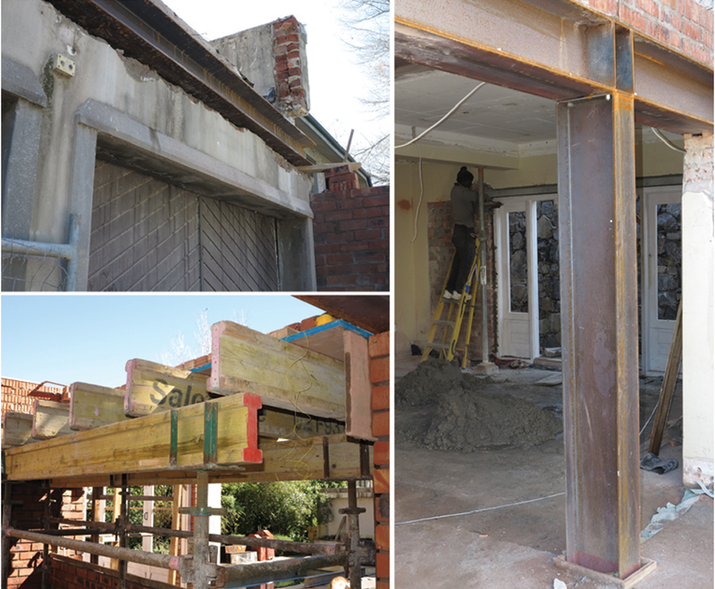Figuur 25: I-balke van staal word dikwels in geboue gebruik. I-balke van hout word dikwels gedurende die
bouproses van 'n gebou gebruik, maar word verwyder sodra die gebou sy eie gewig kan dra.
Die prente hieronder vergelyk die buigweerstandigheid van 'n I-balk met die
buigweerstandigheid van 'n balk met 'n reghoekige vorm van dieselfde massa. In
beide gevalle is die afstand tussen die twee ondersteuningspunte dieselfde. Die
vrag wat hulle moet dra, is ook in beide gevalle identies.
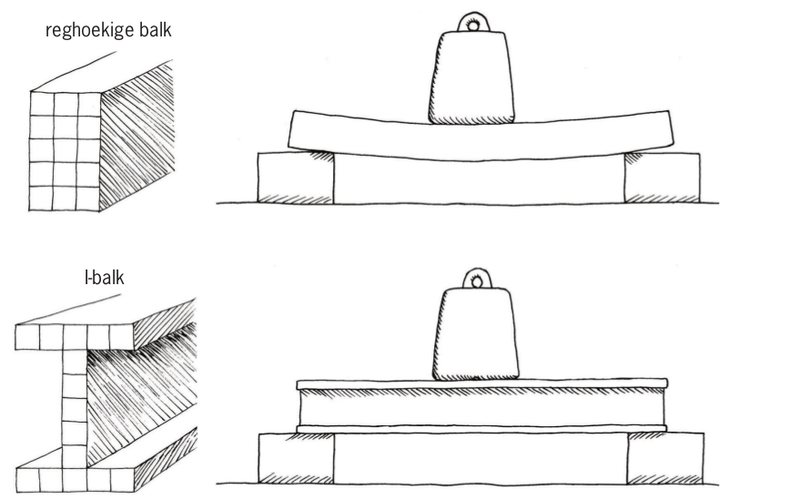Figuur 26
Tel die blokkies binne die prente van die vorms van albei balke. Julle sal sien
dat beide balke van dieselfde hoeveelheid materiaal gemaak is. Dit beteken dat
die twee balke dieselfde weeg en die koste van die materiaal dieselfde sal wees.
Watter balk buig die meeste onder die las wat daarop geplaas word?
Omdat 'n I-balk meer weerstand teen buiging bied, kan 'n ligter en goedkoper
I-balk gebruik word om dieselfde las as 'n reghoekige balk te dra. Dit beteken ook
dat minder staal gemaak sal word, en dus sal minder energie gebruik word om die
staal te maak. Op hierdie manier help die slim ontwerp van boumateriaal om die
nadelige uitwerking van tegnologie op die omgewing te verminder.
IIn die res van die les gaan julle ondersoek hoekom 'n I-balk meer weerstand teen
buiging bied as 'n reghoekige balk wat dieselfde weeg. Eerstens moet julle verstaan
watter kragte op verskillende plekke op 'n balk inwerk as dit buig.
Ondersoek: watter kragte tree op binne 'n balk wat buig?
'n Droë stuk hout versplinter bo-op
die buig. Dit beteken dat daar 'n
trekkrag is wat aan die bokant van
die hout optree. Maar die hout
word net gebuig, so hoe kan daar 'n
trekkrag langs die bokant optree?
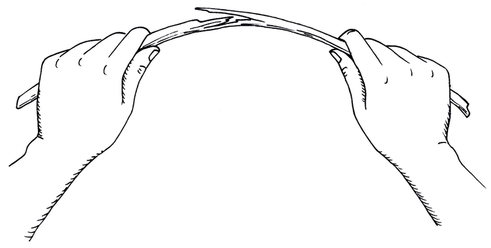Figuur 27
Die prente hieronder sal jou help om te verstaan wat met 'n balk wat buig gebeur.
Die prente wys nie hoe die materiaal waarvan die balk gemaak is werklik lyk nie.
In plaas daarvan maak die prente asof die materiaal gemaak is van 'n klomp klein
blokkies wat met vere aan mekaar gelas is.
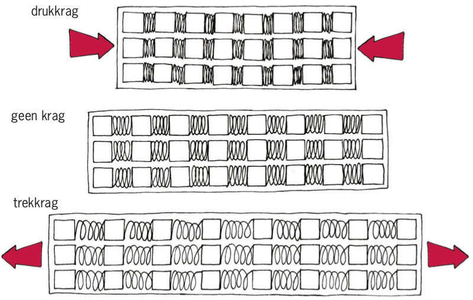Figuur 28: Tekeninge van 'n houtbalk asof dit gemaak is van klein houtblokkies wat met vere
aan mekaar gekoppel is.
Wat gebeur met die denkbeeldige vere as daar 'n trekkrag al langs die lengte
van die balk is?
Wat gebeur met die denkbeeldige vere as daar 'n drukkrag al langs die lengte
van die balk is?
Hieronder is prente van 'n dun balk en 'n dik balk. Elke balk buig wanneer 'n las in
die middel daarvan toegepas word. Die prente is weereens geteken asof die balke
van baie klein blokkies met vere tussen hulle gemaak is.
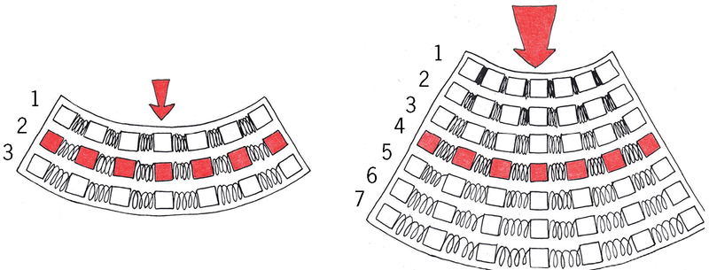Figuur 29
Die volgende gebeur wanneer 'n balk in die middel afbuig:
Die bokant word korter. Dit is saamgepers.
Die onderkant word langer. Dit is uitgestrek.
Die middeldeel behou dieselfde lengte.
Watter tipe krag word op die bokant van die balk uitgeoefen wanneer dit afbuig?
Watter tipe krag word op die onderkant van die balk uitgeoefen wannner dit afbuig?
Watter tipe krag word op die middellyn van die balk uitgeoefen wanneer dit
afbuig? (1)
Hoe werk 'n veer?
Hoe korter jy die veer wil maak, hoe harder moet jy druk.
Hoe langer jy die veer wil maak, hoe harder moet jy trek.
Kyk na die dik balk in figuur 29. Daar is sewe rye blokkies wat met vere verbind
is. Die rye is genommer.
Watter twee lae van die balk help die meeste om die buiging te weerstaan? (1)
Help die middelste laag van 'n balk dit om buiging te weerstaan? (1)
Kyk na balk A en balk B hieronder. Hulle is albei gemaak van dieselfde
hoeveelheid materiaal. Jy kan die blokkies tel om dit na te gaan.
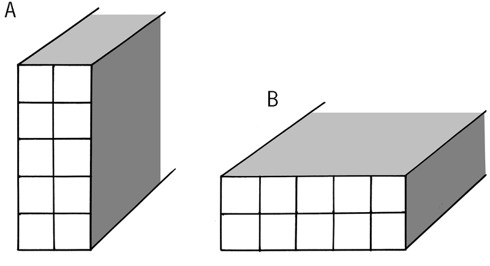Figuur 30
Vergelyk balk C regs met balke A en B. Sal balk C verbuiging beter
weerstaan as balk B?
Vergelyk balk C regs met balke A en B. Sal balk C verbuiging beter
weerstaan as balk B?
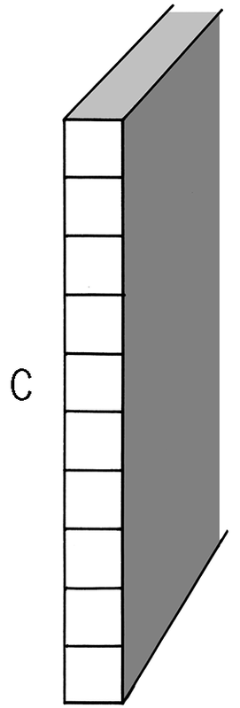Figuur 31
Balk C sal verbuiging die beste weerstaan wanneer
die krag presies afwaarts uitgeoefen word, maar
wanneer daar 'n baie klein sydelingse krag is, sal
balk C knik omdat dit so dun is.
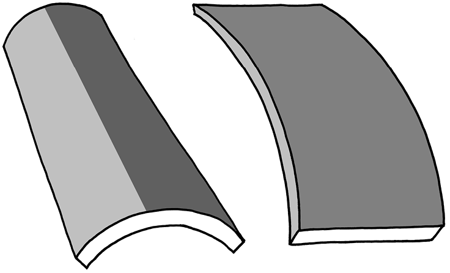Figuur 32
Ingenieurs wou 'n nuwe vorm van 'n balk ontwerp wat verbuiging beter kan
weerstaan as balk B, sonder dat dit kan knik soos balk C. Hulle het geweet dat die
materiaal in die middel van 'n balk nie veel help om verbuiging te weerstaan nie,
want dit rek nie en dit pers ook nie baie in die middel van die balk saam wanneer
dit buig nie, soos wat figuur 29 verduidelik.
Daarom het hulle die ontwerp van balk B geneem en sommige materiaal van
die middel verwyder en dit eerder aan die bokant en onderkant gesit, waar daar
meer rek en saampersing sal wees. Op hierdie manier het hulle die balk hoër
gemaak, maar hulle het ook kort horisontale dele by die bokant en onderkant
gevoeg om te keer dat die balk sywaarts krom buig of knik. Dit word gewys in die
prente hieronder.
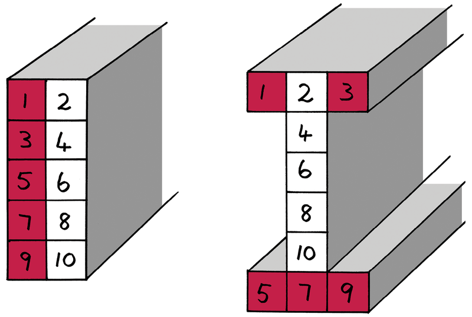Figuur 33
Hoekom weerstaan 'n I-balk verbuiging beter as 'n reghoekige balk wat gemaak
is van dieselfde hoeveelheid materiaal?
Jou antwoorde op die vorige vrae sal jou help.
Totaal [6]
Week 3
Bou 'n model van 'n huis
'n Groot hoeveelheid elektrisiteit of brandstof word gebruik om 'n gebou te verhit
as dit koud is, of dit af te koel as dit warm is.
Julle gaan hierdie week 'n kartonmodel bou volgens planne wat aan julle gegee
gaan word. Dan gaan julle veranderinge aan die huis ontwerp en aanbring, sodat dit
minder verkoeling in die somer, en minder verwarming in die winter nodig sal hê.
Van die veranderinge wat julle gaan maak, sal binne die huis wees en ander
buite. Julle gaan 'n model bou van slegs een helfte van die huis, asof die huis
oor die lengte van die dak oopgesny is. Dit sal dit makliker maak om aan die
binnekant van die klein kartonhuisie te werk om veranderinge aan te bring. Dit sal
dan ook makliker wees vir ander mense om die veranderinge wat gemaak is te kan
sien.
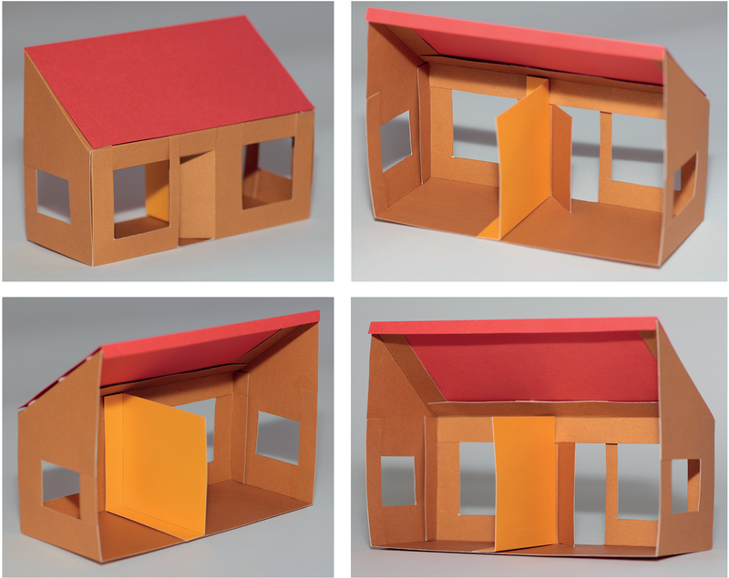Figuur 34
Bou 'n model van 'n huis (60 minute)
Die foto's hieronder wys die ontwikkeling vir verskillende dele van die model wat
julle van karton gaan bou. Die mure en die vloere is uit een stuk karton gemaak.
Die dak en die binnemuur van die huis is van twee ander stukke karton gemaak.
Daar is ook dun stroke karton wat die plekke sal toemaak waar die vensters
uitgesny is en die deur oopgesny is.
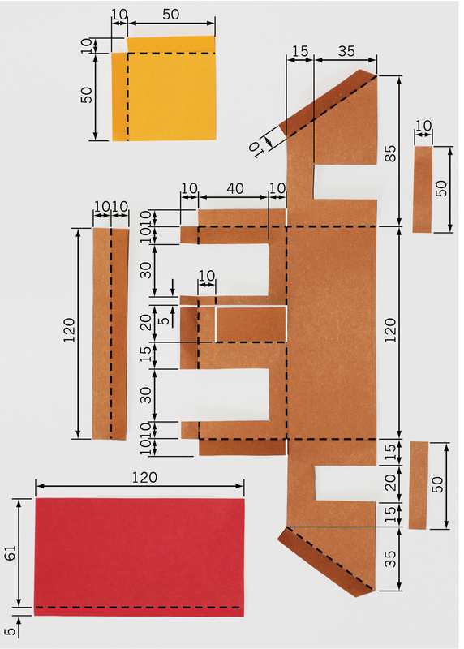Figuur 35: Strepieslyne wys waar jy die karton moet vou.
Jy gaan jou model uit dun karton maak. Om tyd te bespaar moet jy nie dakkappe
vir jou model maak nie.
Jy kan 'n paar ou graankosbokse vir karton gebruik. Jy sal jou model later uitsny,
vou en aanmekaar plak. Doen egter eers die volgende dinge:
Maak akkurate tekeninge van die ontwikkeling van die verskillende dele van
jou model op karton.
Knip dit uit en vou die ontwikkeling van die verskillende dele van jou model.
Plak die klein kartonstroke aan die mure vas om die plekke toe te maak waar
die vensters uitgesny is en die deure oopgesny is.
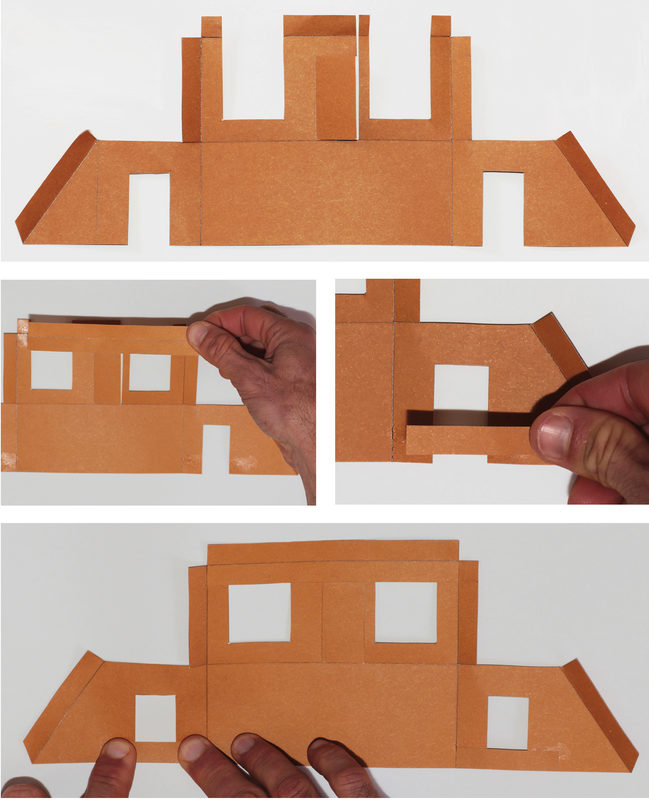Figuur 36
Vou die mure na bo en gebruik Prestik om hulle aan mekaar te las. Voeg nou die
dak en die binnemuur by, ook met Prestik. Kyk weer na figuur 36 as jy nie seker
is hoe om dit te doen nie.
Van nou af moet jy nie gom gebruik nie. Gebruik liewers Prestik, want jy gaan
dalk later die binnemuur wil uithaal, die dak wil afhaal, of die mure na onder
wil vou. Nadat jy die veranderinge gemaak het, kan jy die mure en die dak met
Prestik terugsit.
Totaal [5]
Hoe weet jy wanneer hitte ontsnap?
Kyk na die illustrasies hieronder. Dieselfde pot
vol warm kos word aan die linkerkant en aan die
regterkant gewys. Aan die linkerkant probeer
iemand die pot oplig en brand sy hande. Aan die
regterkant plaas iemand 'n sak gevul met strooi
om die pot en tel dit dan op sonder om sy hande
te brand. Jy kan sê die pot aan die regterkant
word deur die strooisak geïsoleer.
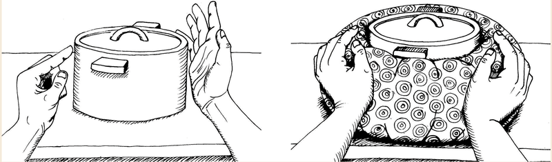Figuur 37: 'n Warm pot, met en sonder isolering
Wanneer jy aan 'n voorwerp raak en dit voel
warm, beteken dit dat hitte besig is om uit die
voorwerp te ontsnap. Die hitte beweeg dus van
die voorwerp af na jou toe. Jy word warmer en die
voorwerp word kouer
Wanneer jy aan 'n voorwerp raak en dit voel nie
warm nie, beteken dit dat geen hitte besig is om
vanaf die voorwerp na jou te beweeg nie.
y kan die hitte van die linkerkantse pot voel, wat
beteken dat hitte besig is om uit daardie pot te
ontsnap. Daarom sal die pot afkoel.
Jy kan nie die hitte van die regterkantse pot met
die strooisak om voel nie. Dit beteken dat geen
hitte besig is om uit daardie pot te ontsnap nie,
of dat dit baie stadig ontsnap. Die pot aan die
regterkant sal dus baie langer warm bly as die pot
aan die linkerkant.
Spanvergadering oor hoe om 'n huis te verbeter (30 minute)
Ontwerp: hoe om 'n huis te verbeter om minder energie te gebruik
Dink aan idees om 'n huis te verbeter sodat dit minder elektrisiteit en/of brandstof
sal gebruik. Die vrae hieronder kan jou help. Om in 'n span saam te werk sal julle
ook help, maar jy moet steeds ook jou eie idees neerskryf. Jou onderwyser sal jou
idees beoordeel.
Probeer ook dink aan veranderinge aan 'n huis wat goedkoop en maklik om
te maak sal wees. Jy kan dalk herwonne of natuurlike materiale gebruik, of selfs
plante.
Wat kan aan die dakontwerp verander word sodat die sonlig nie in die middel
van die somer deur die vensters sal kom nie, maar in die winter deur die
vensters sal kom? Maak 'n rowwe skets van jou ontwerp.
(2)
Hoe kan jy voorkom dat hitte deur die dak ontsnap wanneer dit koud is buite?
Maak 'n rowwe skets van jou ontwerp.
(2)
Die eienaars van die huis wil 'n klein stofie inbou,
soos die een hier regs, om die huis in die winter te
verwarm
Waar in die huis moet hulle die stofie en sy
skoorsteen sit? Dui die stofie se posisie op die
vloerplan hieronder aan. 'n Vloerplan is wat jy
sien as die dak af is, en jy van bo af op die huis
afkyk.
Wenk: Hou soveel
moontlik van die stofie se
hitte binne die huis en moenie dat dit na buite
ontsnap nie.(1)
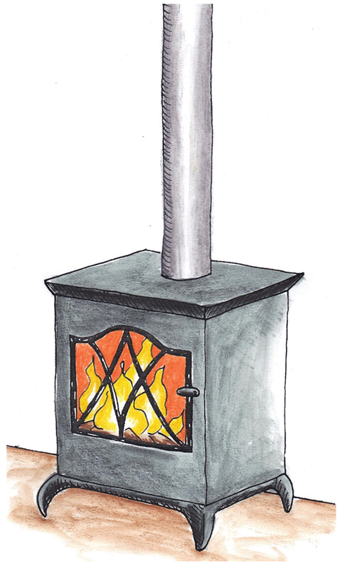Figuur 38
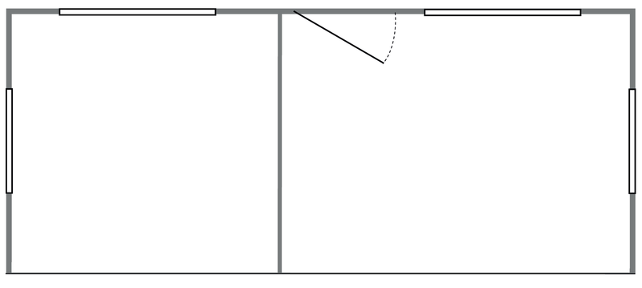Figuur 39: Vloerplan van jou huismodel
Hoekom sal jy die stofie daar sit? (1)
Drie verskillende mense kook sop
op drie verskillende maniere op 'n gasstofie,
soos wat hieronder gewys word.
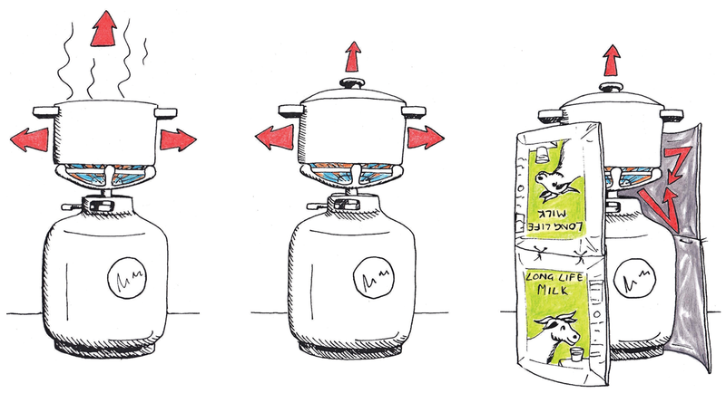Figuur 40
Watter een sal die minste gas gebruik om die sop te kook?
Verduidelik jou antwoord.(2)
Kyk weer na die vorige twee hoofstukke. Gee enige van die prente jou ander
idees oor hoe om 'n huis te verbeter om energie te bespaar?
(2)
Total [10]
Teken jou beplande huisverbetering (30 minute)
Maak 'n tekening in isometriese projeksie van jou beplande verbeteringe
Maak 'n vryhandskets in 3D om te wys wat jy beplan om by te voeg, of te
verander, aan die buitekant van die huis. Jou skets moet aandui wat jy sal
sien as jy in 'n boom links voor die huis sit. Een van die foto's in figuur 34 wys
hierdie aansig van die huis.
Voeg byskrifte en notas by jou skets en verduidelik jou verbeteringe.
Jou onderwyser sal na die volgende dinge kyk om jou punte toe te ken:
Jy het ten minste een verbetering aan die buitekant van die huis aangedui
(1)
Die verbeteringe sal die hoeveelheid energie wat die huis gebruik,
verminder en dit sal maklik en goedkoop wees om die verbeteringe
op 'n regte huis aan te bring.
(2)
Dit is maklik om te verstaan wat jy geskets het.
(2)
Die byskrifte en notas verduidelik die verbeteringe goed.
(2)
Maak 'n isometriese projeksietekening om jou beplande verbeteringe aan die
buitekant van die huis aan te dui. Jou tekening moet weereens wys wat jy sou
sien as jy in 'n boom links voor die huis sit.
Moenie enige verskuilde dele wys nie.
Jou onderwyser sal kyk na die volgende aspekte van die tekening om jou punte toe te ken:
Dit het 'n gepaste opstrif. (1)
Dit is gemaak vanuit die regte gesigshoek. (2)
Dit wys al die verbeteringe in jou skets. (1)
Dit wys al die sigbare lyne van die huis. (1)
Dit wys al die vertikale lyne as vertikaal, en al die horisontale lyne teen
30°. (2)
Dit is netjies. (1)
Totaal
[15]
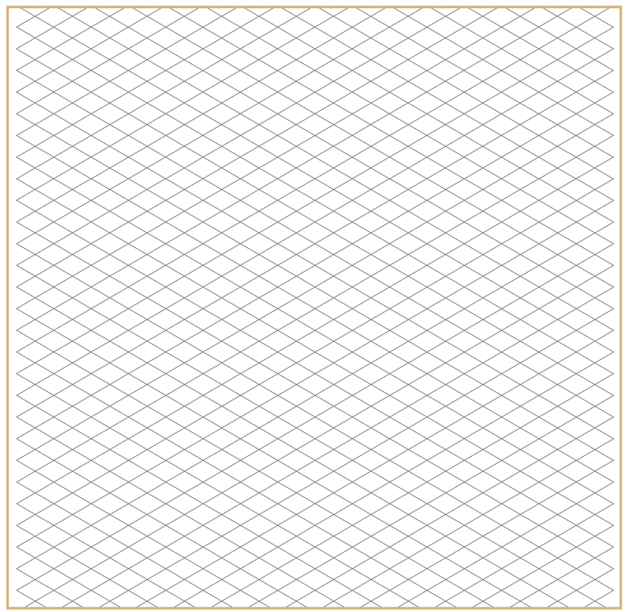
Huiswerk
Vra raad by jou ouers of ouer mense in die gemeenskap. Sê vir hulle:
"Ek wil leer hoe om veranderinge te maak aan 'n huis sodat dit minder
elektrisiteit of brandstof vir verwarming in die winter sal gebruik, en
minder elektrisiteit vir verkoeling in die somer. Vertel my asseblief meer oor
veranderinge wat goedkoop is en maklik om te maak."
Skryf hulle raad hieronder neer. Jy kan ook sketse maak.
Versamel materiale wat jy kan gebruik om jou huismodel te verbeter en bring
dit volgende week saam skool toe. Daar is afvalmateriaal wat goed sal werk.
Jy hoef nie dieselfde materiaal wat jy in die werklike lewe sal gebruik op die
model te gebruik nie. Bring ook ân stuk geriffelde karton, so groot soos ân A4 vel
papier, skool toe.
As jy nie hierdie materiaal skool toe bring nie, sal jy nie die verbeteringe aan
jou model van 'n huis kan wys nie.
Week 4
Maak verbeteringe aan jou model van 'n huis (60 minute)
Maak: verbeter jou model van 'n huis
Individuele werk
Jy wil vir ander mense wys wat die verskillende veranderinge is wat aan die huis
aangebring kan word sodat minder energie nodig sal wees om die huis te verwarm
of af te koel. Party van die verbeteringe mag aan die buitekant van die huis wees,
en ander aan die binnekant. Party verbeteringe mag selfs bygevoeg word op die
grond om die huis.
Heg jou model van 'n huis met Prestik aan 'n groot, plat stuk karton vas. Die plat
stuk karton stel die grond om die huis voor.
Verander nou dinge aan die huis, of voeg goed by, sodat dit minder energie
sal verbruik. Gebruik die materiale wat jy van die huis af gebring het om die
veranderinge te doen.
Maak 'n klein papierplakkertjie met 'n nommer daarop vir elke ding wat jy
verander of byvoeg en plak dit vas aan die ding wat jy byvoeg of verander. Sê vir
elke verandering wat die doel daarmee is en waarvan dit gemaak is. As jy die
naam van die ding ken, kan jy dit ook neerskryf. Byvoorbeeld:
Waarvan word dit in die werklike lewe gemaak?
Wat is die doel daarmee?
Wat is die ding se naam?
Plak aan die einde ook hierdie stukkie papier op die plat stuk karton. Hierdie
papiertjie word 'n kantskrif genoem. Dit verduidelik vir mense wat die
verskillende goed op en aan jou model is.
Totaal [20]
Evalueer jou verbeteringe aan die huis (60 minute)
Jy gaan 'n rubriek maak om jou werk te evalueer, asook die werk van twee ander
leerders wat nie lede van jou span is nie.
Evalueer elke model objektief en regverdig. Jy moet dus maak asof jy die werk
evalueer van iemand wat jy nie ken nie. Moenie hoë punte aan jouself en ander
toeken as die verbeteringe aan die huis nie goed, of nie genoeg is nie. Wees ook
voorbereid om te verduidelik waarom jy 'n spesifieke punt toegeken het.
Evalueer: maak en gebruik 'n evalueringsrubriek
Verander elk van die volgende
kriteria na 'n vraag. Maak dan 'n tabel met al die
vrae. Gee 'n punt langs elke vraag, van een tot drie.
Daar moet minstens twee verbeteringe aan die binnekant van die huis wees.
Hoe meer verbeteringe daar is, hoe beter. Ignoreer egter veranderinge aan die
huismodel wat nie die hoeveelheid energie wat verbruik word, verminder nie.
Daar moet minstens een verbetering aan die buitekant van die huis wees.
Hoe meer verbeteringe daar is, hoe beter. Ignoreer veranderinge wat nie sal
werk nie. Die verbeteringe moet so goedkoop as moontlik wees en maklik om
in die werklike lewe aan te bring. Hulle moenie 'n klomp ekstra bouery vereis
nie.
Dit sal goed wees as van die verbeteringe gedoen is met natuurlike materiale
wat in die nabye omgewing gevind kan word, of deur die hergebruik van
afvalmateriaal.
Die verbeteringe aan die model moet netjies wees. Deur net na die model te
kyk, moet dit maklik wees om te verstaan wat die verbeteringe is.
Die kantskrif moet 'n duidelike verduideliking gee van wat die verbeteringe
behels.
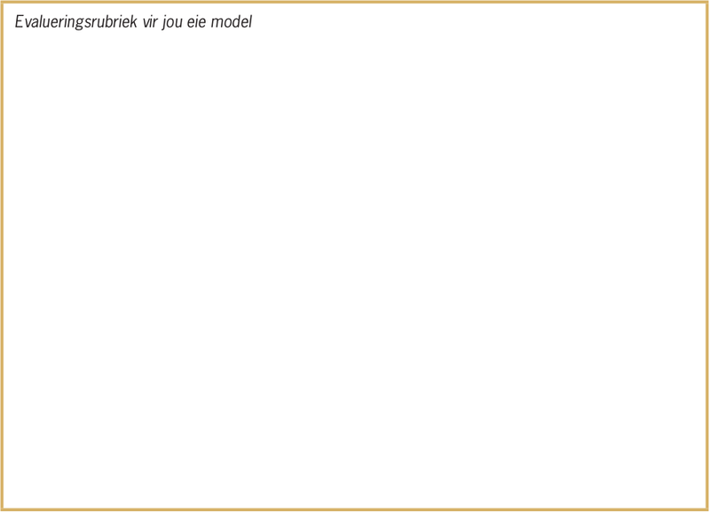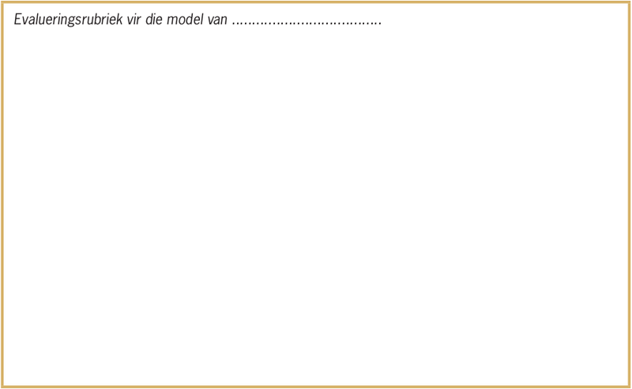
Week 5
Lewer 'n aanbieding oor julle model van 'n lae-energiehuis
Later in die week gaan jou span 'n aanbieding doen oor julle verbeteringe aan 'n
huis. Die aanbieding moet tussen drie en vyf minute lank wees. Elke spanlid moet
deel wees van julle aanbieding. Na julle aanbieding kan die ander lede van julle
klas vrae aan julle stel.
Berei julle aanbieding voor (30 minute)
Spanvergadering
Besluit watter deel van die aanbieding elkeen van julle gaan doen.
Een van julle moet praat oor die rowwe sketse wat julle gemaak het, en die
finale tekening in isometriese projeksie.
Een van julle moet die model wys en al die veranderinge aan die binnekant
en aan die buitekant van die model verduidelik.
Een van julle moet praat oor die raad wat die ouer mense vir julle gegee het
oor hoe om 'n huis te verbeter om energie te bespaar. Julle moet ook praat
oor hoe natuurlike materiale gebruik kan word om 'n huis te verbeter.
As daar 'n vierde persoon in julle groep is, kan hy of sy praat oor die eerste
planne wat julle in week drie in julle spanvergadering gemaak het, en hoe
julle later hierdie planne verbeter het en dinge bygevoeg het.
Besluit oor die volgorde waarin julle
die onderskeie onderdele van die
aanbieding gaan doen. Wie praat eerste en wie volgende?
Skryf die dele van die aanbieding hieronder neer, in die volgorde waarin julle
dit gaan doen en wys wie watter deel gaan doen.
Individuele werk
Beplan jou eie deel van die aanbieding.
Gebruik die spasie hieronder om neer te skryf wat jy gaan doen.
Huiswerk: Oefen jou aanbieding.
Wenke vir die aanbieding van jou werk
Staan regop en kyk na die klas terwyl jy praat.
Moenie alles wat jy wil sê, neerskryf nie. Maak eerder 'n lys van die belangrikste
punte waaroor jy gaan praat. Daar moenie meer as vyf dinge wees nie. Moenie
volsinne op jou lys gebruik nie, maar slegs sleutelwoorde om jou te herinner
aan waaroor jy wil praat.
Wat jy aan die klas vertel, is baie belangrik, want dit kan mense help om geld te
spaar en die nadelige gevolge vir die omgewing te verminder. Wees trots op wat
jy vir die klas vertel en praat hard en duidelik.
Gebruik jou sketse, tekeninge en model om, terwyl jy praat, dinge uit te wys.
Dit sal die klas help om te verstaan wat jy sê. Maak seker dat hulle die sketse,
tekeninge en die model duidelik kan sien.
Jy kan ook prente uit tydskrifte en koerante as voorbeelde van materiale
saambring en dit in jou aanbieding gebruik.
Weet wanneer dit jou beurt is om te praat.
Bly binne die tydsbeperking. Dit help dikwels om iemand in die klas te vra om
kaarte in die lug te hou wat sê hoeveel tyd jy nog het.
Aanbiedings van al die spanne voor die klas (90 minute)
Luister goed na die aanbiedings van die ander spanne.
Hulle kan interessante
idees hê waaraan jy en jou span nie gedink het nie. Skryf daardie idees hieronder
neer sodat hulle jou help om te onthou as jy eendag jou eie huis ontwerp of verbeter.
Geniet jou wintervakansie! Na die wintervakansie
gaan julle dinge maak wat met hefbome en ratte werk.